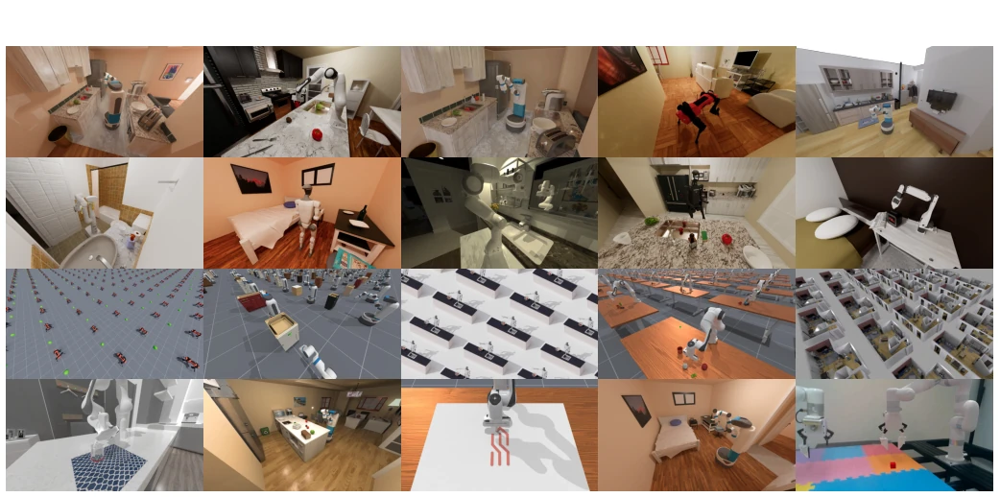
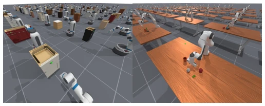
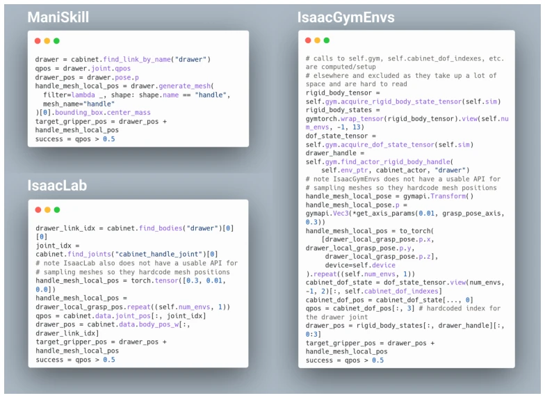
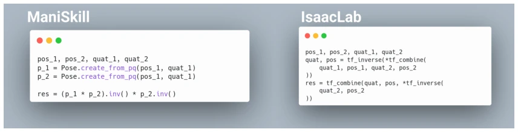
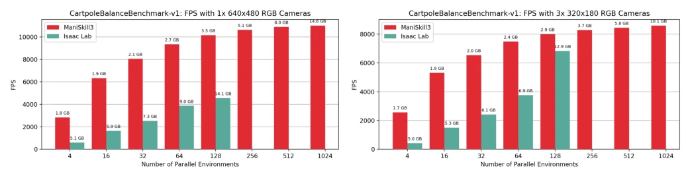
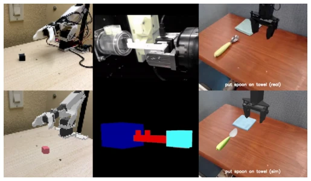
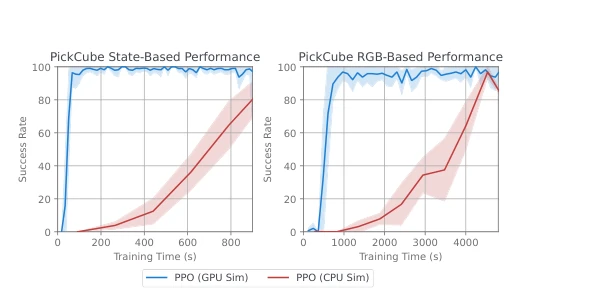
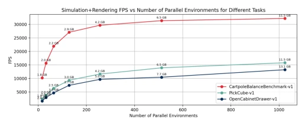
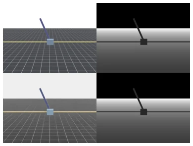
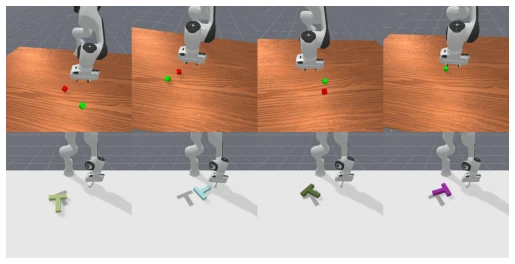

ManiSkill3 自称 GPU 并行仿真渲染的“速度之王”，30k FPS 听着像营销噱头，但内存占用确实比 Isaac Lab 低 2-3 倍，这对大模型训练很关键。它用开源 SAPIEN 替代了闭源 Isaac Sim，生态友好度拉满。不过，光栅化渲染对比 Ray-tracing 在真实感上略有妥协，Sim2Real 仍需绿幕辅助，这点略显复古。作为基准，它填补了视觉操作任务的空白，但软体仿真并未完全并行化，算是留了个尾巴。对于追求极致效率的研究者，这是个值得尝试的工具，但别指望它能一键解决所有 sim2real 问题。
ManiSkill3 claims to be the "speed king" of GPU parallel simulation rendering; 30k FPS sounds like a marketing gimmick, but memory usage is indeed 2-3 times lower than Isaac Lab, which is crucial for large model training. It uses open-source SAPIEN to replace closed-source Isaac Sim, maximizing ecosystem friendliness. However, rasterization rendering compromises slightly on realism compared to Ray-tracing; Sim2Real still requires green screen assistance, which is somewhat retro. As a benchmark, it fills the gap in visual manipulation tasks, but soft-body simulation is not fully parallelized, leaving some loose ends. For researchers pursuing ultimate efficiency, this is a tool worth trying, but do not expect it to solve all sim2real problems with a single click.
The core challenge of embodied intelligence is generalized manipulation, but robot manipulation datasets are far less rich than visual/language ones. Real-world data collection is costly and has low success rates [18, 12], existing GPU simulators like Isaac [33] and Mujoco MJX [49] have accelerated locomotion, but in manipulation tasks they often rely on state estimation rather than visual input, and lack heterogeneous simulation support. This leads to visual-input-based RL training being too slow and difficult to scale. We need a framework capable of parallel rendering of different scenes and supporting large-scale visual data generation to solve the sim2real generalization bottleneck. Additionally, existing frameworks like Robocasa [39] only support CPU backends, speed is limited, and cannot support large-scale RL exploration.

Fig. 1: Multiple distinct task categories are displayed, ranging from room-scale tasks to humanoid interactions and drawing tasks. Majority of tasks shown are GPU-parallelized, simulating + rendering at state-of-the-art speeds and GPU memory efficiency. Scenes are from ReplicaCAD and AI2-THOR.
ManiSkill3 is built based on SAPIEN [52] and PhysX, with the core being GPU-parallel physical simulation and rendering. On the pipeline, after environment initialization, all parallel instances synchronously execute physical calculations and rendering on the GPU, reducing Python/PyTorch overhead. Innovations include: 1) Heterogeneous simulation, allowing different parallel environments to contain different object geometries and degrees of freedom [6]; 2) Object-oriented API, simplifying the management of joints, links, and Actors, reducing tensor indexing complexity compared to Isaac Lab [8, 9]; 3) Supports point cloud/voxel input and VR teleoperation, facilitating data collection. The system achieves efficient multi-environment training on a single GPU through optimized memory management. Additionally, it provides a pipeline to generate large-scale datasets from few demonstrations, utilizing RLPD [2] and RFCL [47] algorithms.

Fig. 6: Example tasks in ManiSkill3 showing heterogeneous GPU simulation with different DoF articulations and/or dif- ferent numbers of objects being simulated in each parallel environment.

Fig. 9: Code comparison for computing a grasp position on a cabinet handle and the joint angle of the cabinet drawer in 3 different GPU simulation frameworks.

Fig. 10: Code comparison for manipulating batched poses
On Cartpole and PickCube tasks, ManiSkill3 uses only 3.5GB VRAM in 128 parallel environments, while Isaac Lab requires 14.1GB [2]. PPO training for PickCube shortened from hours to minutes, state observation 15x acceleration, RGB observation 8x acceleration [10]. In Sim2Real experiments, the Koch manipulator grasping success rate reached 91.6% [7]. Real2Sim evaluation shows a correlation of 0.9284 between simulation and real success rates. Baselines cover PPO, SAC, Diffusion Policy, etc., proving the framework's effectiveness in RL and LfD. For complex scenes, FPS will drop, but overall efficiency still outperforms competitors.

Fig. 2: GPU Simulation+Rendering of RGB speeds of the Cartpole environment with different camera setups ManiSkill3 and Isaac Lab. Annotated numbers indicate GPU memory usage, with no data points beyond 128 environments for Isaac Lab due to running out of GPU memory. Note that this rendering setting mimics that of real world datasets collected in Open-X and Droid. Speed is dependent on a few factors, primarily the number of objects, geometry complexity of each object, as well as simulation/rendering configurations which can be tuned for speed or accuracy. As a result, it is possible the numbers/trends here may not hold for every environment.

Fig. 8: Three different kinds of digital twins in ManiSkill3. Top row shows the real-world setup and bottom row shows the digital twin. Left: Domain randomized digital twin of a cube picking task. Middle: Digital twin of the vision-tactile simulation of a key insertion task. Right: Real2sim digital twin of a spoon placing task.

Fig. 11: Wall-clock training time of PPO on GPU/CPU sim- ulation showing the average success rate over time across 5 seeds. Shaded areas correspond to the 95% confidence interval.
其他图片Other Figures

Fig. 4: GPU Simulation+Rendering speeds of various tasks with a single 128x128 resolution camera with a simulation frequency of 120 and control frequency of 60, meaning the camera renders ever 2 sim steps. RGB, depth, and segmenta- tion data are all simultaneously being rendered. The only big variations between environments of the three curves are the objects and robots being simulated.

Fig. 3: Comparison of ManiSkill3 (Top row) and Isaac Lab (Bottom row) parallel rendering 640x480 RGB and depth image outputs of the Cartpole benchmark task.

Fig. 5: Parallel rendering outputs of 1024 parallel environ- ments for the StackCube and PushT tasks with a subset of 4 them visualized here. Original renders are size 128x128, images shown are up-scaled for clarity. Top-row shows camera pose randomization and bottom row shows texture randomiza- tion, renderered depth/segmentation data is not shown here.